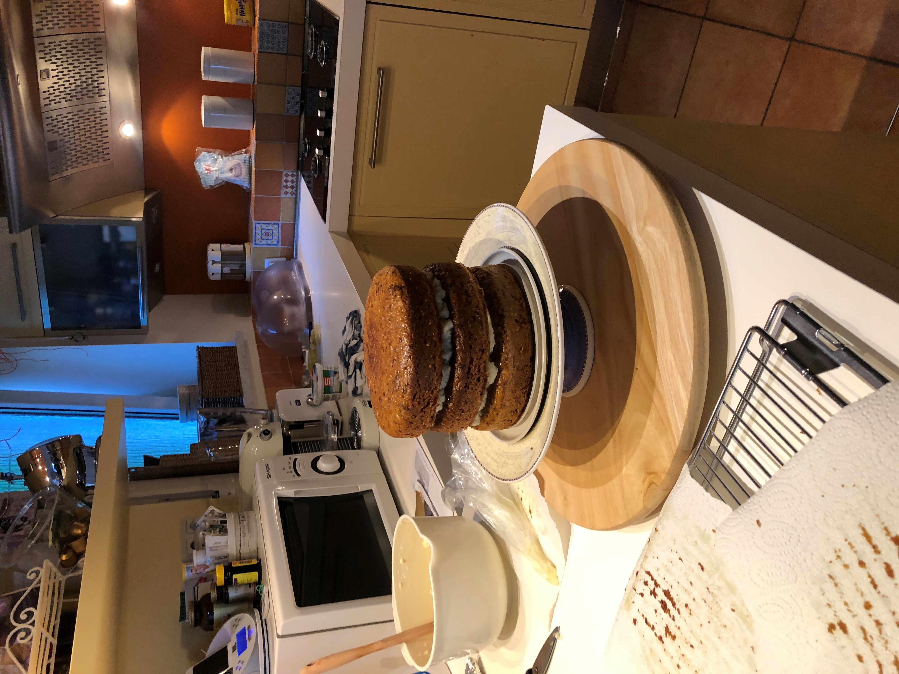

TIPS&TRICKS KAKO NAPRAVITI I ISPEĆI NAJBOLJI BISKVIT
Ravno iz kuharice bake Marije trikovi za lagani, veliki, prhki i dobro prožet
biskvit.
Tip 1 : Žut kao žutanjak
Dobre namirnice su pola kolača, zaleti se na najbliži plac i kod svoje kumice kupi
domaća jaja. Samo sa domaćim jajima ćeš dobiti pravu zlatnu boju biskvita.
Trick 1: Bjelanjke i žutanjke NE muti skupa
Trebaš odvojiti žutanjke i bjelanjke. Bjelanjke tuči sa prstohvatom soli, bjelanjci
su umućeni ako se više ne kližu po posudi, već stoje na mjestu. Žutanjke treba
izmiksati zajedno sa šećerom, sve dok ne nastane pjena, sigurno 10 min treba
miksati, uzmite si vremena, nemojte se žuriti. Zašto ih odvajamo? Želimo postići
najveći mogući volumen, a upravo to ćemo dobiti ako umućene bjelanjke zadnje
umješamo sa šupljom kuhačom u smjesu. Biskvit nakon ovog postupka bude
mekan i dobro razabran i veliki.
Trick 2: Jednoliko pečenje
Svima se dogodi da im biskvit u sredini bude «nabubreniji» nego na rubovima,
razlog tome je što se rubovi prije ispeku. Ovaj trik će vam pomoći da to
izbjegnete. Potrebni su vam papirnati ubrusi i aluminijska folija, izmjerite opseg
svog kalupa, treba vam dužina opsega, toliko papira odrežite i malo duže
aluminijsku foliju odrežite. Papir složite uredno tako da ga možete umočiti u
hladnu vodu i uredno opet ispraviti, nakon što ste napravili sve to, namočeni
papir zamotajte u aluminijsku foliju, kad ste to napravili prenesite do svog
kalupa i rubove omotajte, cijela bočna strana mora biti omotana. Vaš biskvit
nakon ovog trika će biti jednolik i ravan.

povratak na stranicu: GASTRO